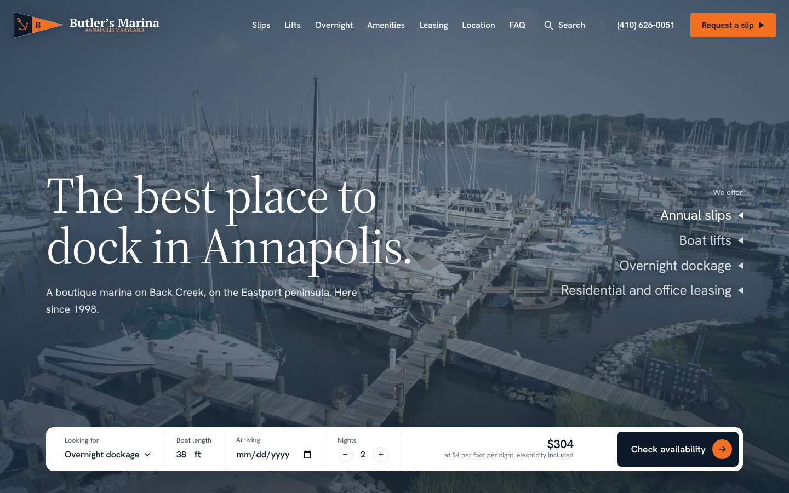
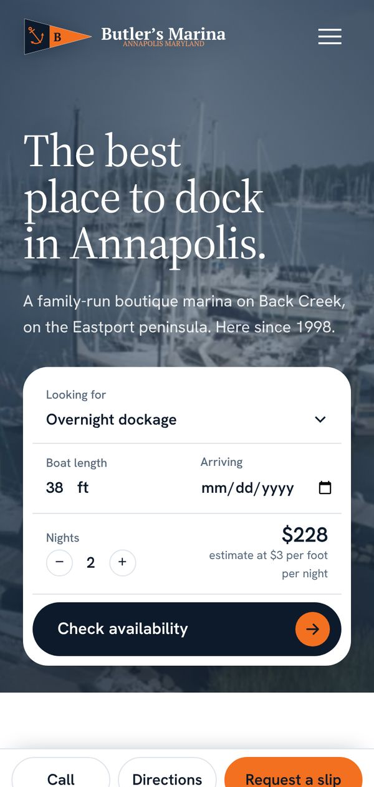

Butler's Marina.
Lets boaters price and request a slip without picking up the phone.

The ask.
Butler's Marina is my family's marina on Back Creek, here since 1998. The new site answers a boater's first questions before they ever dial: what it costs, where their slip sits and how far dinner is from the dock.
- Client
- Family-run marina
- Where
- Eastport, Annapolis
- Site type
- The Front Desk
- Status
- Live
What I built.
Instant estimate
Pick overnight dockage, boat length and nights, and the price updates as you go. The button opens the request form already filled in.
Dock map
Every slip on the docks, traced from the marina's plat. Tap a slip to see where it sits and ask about it, or show only the slips with lifts.
Walking map
Restaurants, shops and landmarks around Eastport and downtown. Pick one and the map draws the walking route from the dock, with the time.
One request form
Slips, lifts, overnight dockage, apartments and offices, with a waiting list option. Each request type asks only for what the office needs to reply.
Search
A search box on every page and a filter on the FAQ, so "electric" or "winter" goes straight to the answer.
Nothing lost
Old links from the previous site still land in the right place, including the text messaging policy pages.

Built for phones first.
On phones, Call, Directions and Request a slip stay pinned to the bottom of the screen. The dock map turns tall, so the main pier runs top to bottom.
Behind the scenes.
A boater sends a request
It lands in the Google Sheet the marina team already uses, and an alert reaches the office inbox the moment it comes in.
They get a confirmation
An email lists what they sent, with the marina's address and phone. Texts and marina news are separate boxes, never required.
Spam stays out
A quiet check under the form stops bots before anything reaches the sheet.
Want something like this?
Start with a ten-minute intake. Your fixed-price quote comes back by email within three business days.